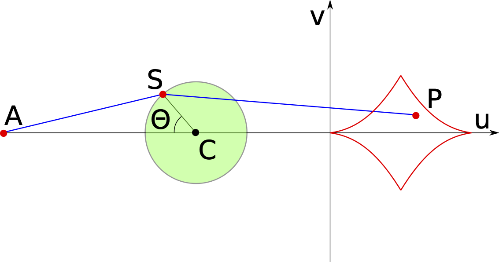
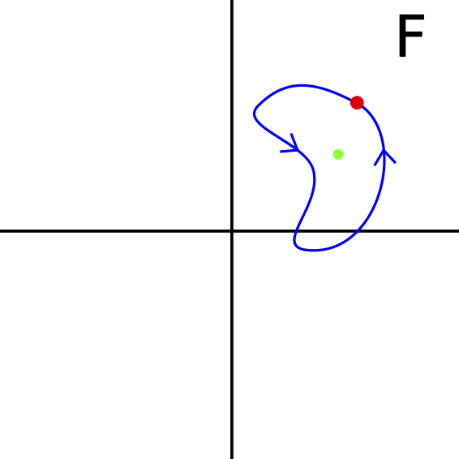
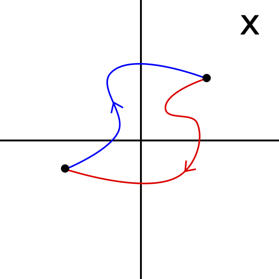

I am a Postdoctoral researcher at the Perimeter Institute for Theoretical Physics in Waterloo (Canada) and Carnegie Mellon University in Pittsburgh (United States). I am passionate about theoretical cosmology and theoretical physics in general. For more details, see my personal website. On this website, I share the documentation of a couple projects:
Schrödinger code: Quantum mechanics is a fundamental in physics describing the evolution of non-relativistic quantum systems. In this webpage, I solve the time-dependent Schrödinger equation using the Suzuki-Trotter method. I illustrate the code with a one- and two-dimensional example.
Fig. 1 - The evolution of a Gaussian wave packet in a harmonic oscillator
Picard-Lefschetz code: Oscillatory integrals are fundamental to physics but subtle to define and often difficult to evaluate. Using Picard-Lefschetz theory, I develop a new method to evaluate multi-dimensional oscillatory integrals. The code is demonstrated with several lensing problems in wave optics.
Fig. 2 - A two-dimensional lens as a function of the frequency
Catastrophe theory: Catastrophe theory is the classification of degenerate critical points. In these notes I give an impression of the mathematics underlying Catastrophe theory following Catastrophe Theory by Domenico Castrigiano and Sandra Hayes.

Fig. 3 - The Zeeman catastrophe machine
Topological Galois theory: I prove the famous unsolvability of polynomials with degree higher than \(4\) using topological Galois theory. The discussion is based on an elementary proof developed Vladimir I. Arnol’d in a lecture series for high school students in 1963. For the original proof see the transcript of the lecture series Abel’s Theorem in Problems and Solutions. The notes are also based on the review paper by Henryk Żolądek and the talk by Michael O’Connor.


Fig. 4 - The trajectories of the roots (right) under a loop in function space (left)
One-piece Cody kite: In the nineteenth century Samuel Franklin Cody developed the Cody War-Kites, which were large kites able to lift persons to great hight, and were used by the British before World War I as a smaller alternative to balloons for artillery spotting. More recently, Ton Vinken developed an adaptation of the Cody kite which can be constructed out of a single piece of material. Unfortunately, it is currently difficult to find plans online. Inspired by this idea, I constructed a plan which I hope will encourage others to build the one-piece Cody kite.
Fig. 5 - One piece cody kite